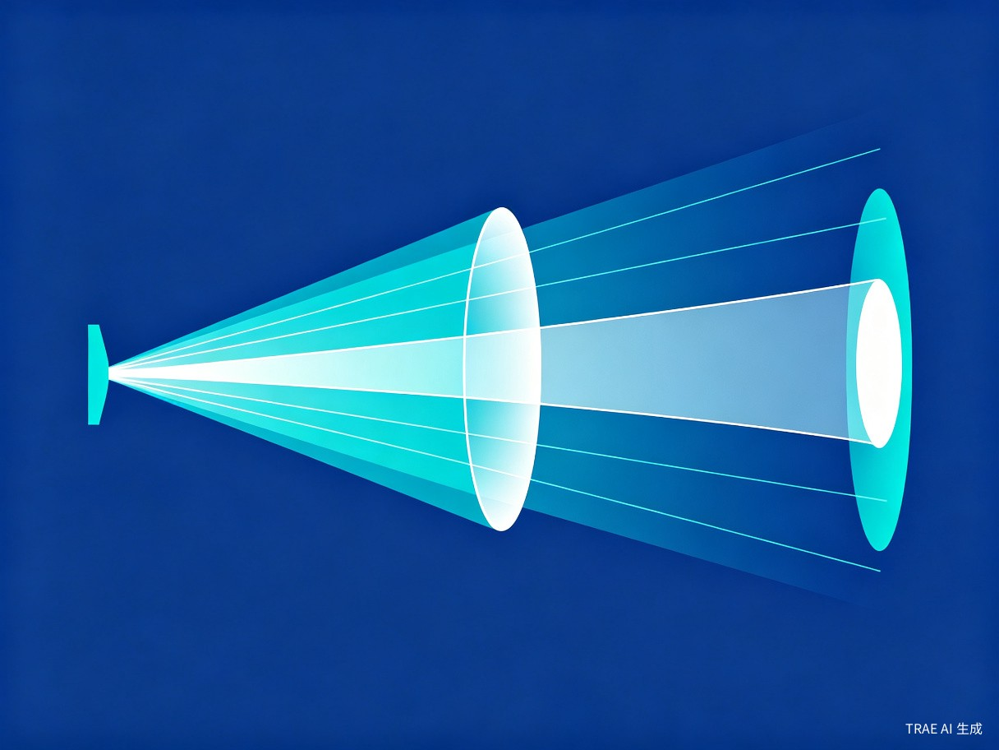
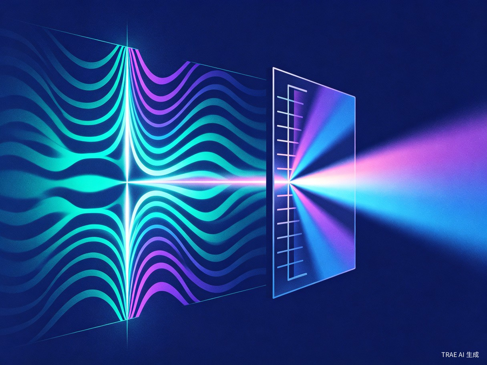
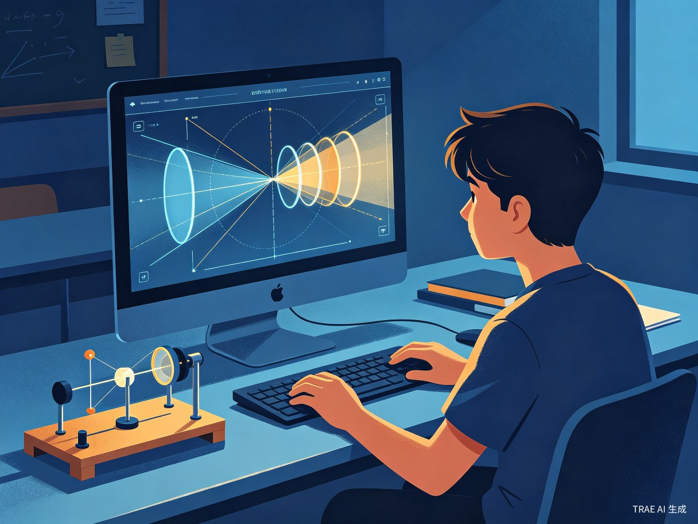

光学硬件仿真实验室是一个网页版的光学硬件仿真平台，通过高精度的物理引擎和直观的交互界面，让用户在浏览器中即可完成专业级光学实验。
精确模拟凸透镜、凹透镜的成像规律，实时显示光路图与像的位置、大小、虚实变化
支持多种介质界面的光线追踪，直观展示斯涅尔定律在不同场景下的应用效果
模拟双缝干涉、单缝衍射、光栅分光等波动光学现象，动态展示干涉条纹的形成过程
连接实体光学硬件，将设备的连接方式和安装角度实时反馈到仿真页面，实现虚实结合
从中学物理课堂到大学实验室，从偏远地区学校到光学爱好者的工作台，我们致力于为所有光学学习者扫除障碍
一套基础光学实验设备动辄数万元，高精度仪器更是数十万起步，大多数学校难以配备充足的设备
光学实验需要暗室环境，实验室开放时间有限，学生无法随时随地进行实验练习
真实实验中调整参数后难以回溯，无法完整保留实验过程和中间数据，不利于深入分析
偏远地区和欠发达学校几乎无法开展光学实验，教育公平性受到严重影响
需要直观演示透镜成像、光的传播等基础概念，增强课堂互动性与学生理解深度
需要预习和复习干涉、衍射、偏振等复杂现象，在课前课后进行充分的仿真练习
希望在没有专业设备的情况下探索光学现象，验证自己的创意和猜想
实验条件不足地区的学校和学生，渴望获得与发达地区同等质量的教育资源
我们不仅是在做一个仿真工具，更是在为光学教育创造一种全新的可能性
只需一个浏览器，无需安装任何软件，无需昂贵设备，即可开展专业级光学实验
支持反复操作，任意调整参数，观察不同条件下的实验结果，让试错成为学习的一部分
显著减轻学校在设备采购、维护和场地建设上的经济压力，让资源投入更高效
通过将高质量的光学实验资源数字化、网络化，我们让偏远地区的学生也能享受到与城市学生同等的教育体验。 技术不应成为教育的壁垒，而应是知识的桥梁。
从基础光学到高级仿真，覆盖光学学习的完整路径

精确模拟各类透镜的成像规律，支持实时调整物距、焦距、透镜类型等参数，动态展示光路变化与成像结果。

深入探索光的波动性质，直观展示双缝干涉、单缝衍射、光栅分光等经典实验现象。
通过蓝牙或USB连接实体光学硬件，将真实设备的安装角度、连接方式实时同步到仿真界面，实现虚拟预测与真实验证的闭环。
实体设备 → 数据采集 → 仿真引擎 → 可视化呈现
基于现代Web技术栈构建，确保高性能、高兼容性与可扩展性
GPU加速的光线追踪
高精度光学计算
硬件通信接口
实验数据存储
交互式光路绘制
多端适配支持
远程协作实验
智能实验指导
React + Canvas 2D/WebGL
交互式光学元件库
实时光路渲染
光线追踪算法
物理参数计算
硬件数据解析
WebUSB / Web Bluetooth
传感器数据采集
云端API接口
覆盖从课堂到实验室，从学习到研究的完整场景

从基础仿真到智能实验助手，持续进化
完成透镜成像、折射反射、干涉衍射等核心仿真模块，支持基础参数调节与光路显示
接入常见光学传感器与硬件设备，实现虚实结合实验，支持数据导入导出
引入AI辅助分析实验结果，智能推荐实验方案，自动生成实验报告
支持多人协作实验、实验方案社区共享、教师端班级管理等功能
我们相信，每一个对光学充满好奇的学习者，都应该有机会亲手探索光的奥秘。 光学硬件仿真实验室，正在让这一愿景成为现实。